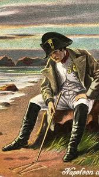
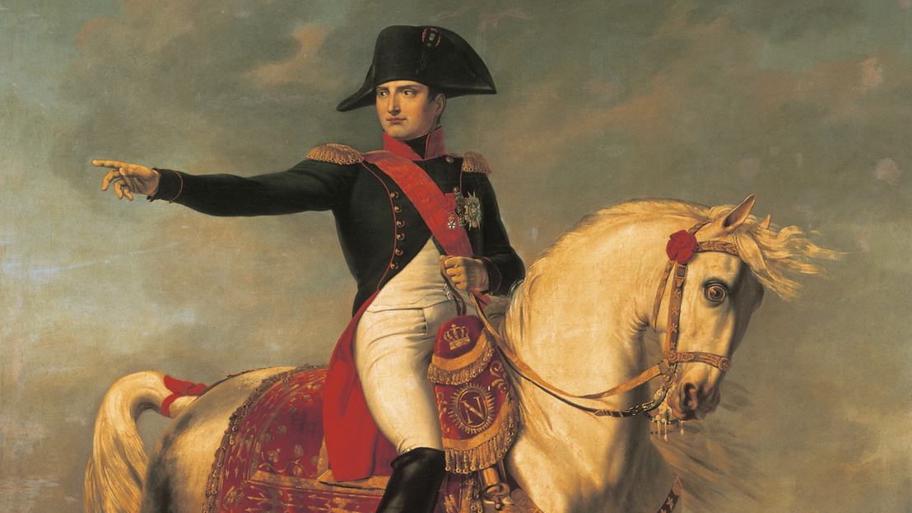
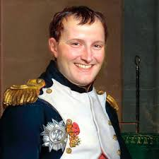
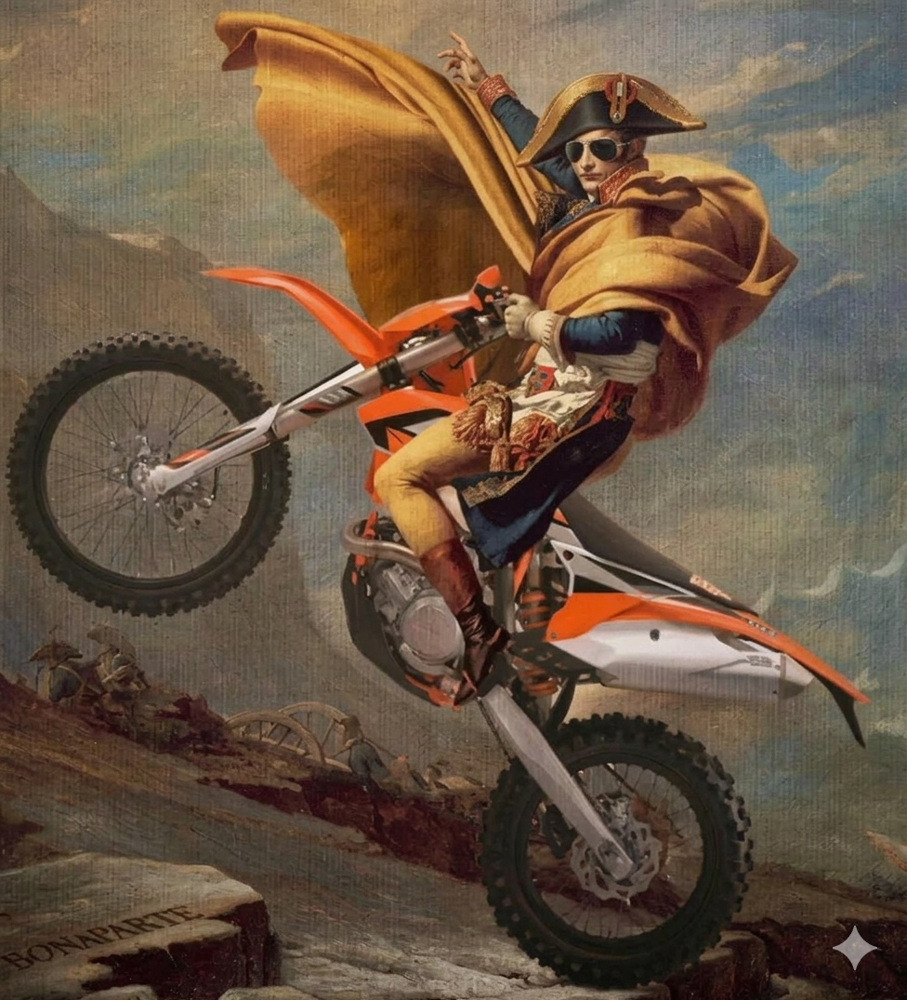
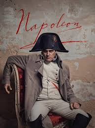

Felhasználónév: Napóleon Bonaparte
Szlogen: "A lehetetlen nem létezik."
Foglalkozás: Császár, hadvezér, politikus
Hobbik: Hadászat, stratégia, térképezés, hódítás
Bemutatkozás:
Korzikán születtem 1769-ben, és már fiatalon a hadászat és a stratégia világa vonzott. Katonai tanulmányaimat Franciaországban végeztem, ahol hamar kitűntem tehetségemmel és eltökéltségemmel. A francia forradalom idején gyorsan emelkedtem a ranglétrán, majd 1799-ben átvéve a hatalmat Franciaország első konzulja lettem, később pedig császárrá koronáztam magam.
Uralmam alatt jelentős reformokat vezettem be: megreformáltam a közigazgatást, az oktatást és a jogrendszert, melynek egyik legfontosabb eredménye a polgári törvénykönyv (Code Civil) volt. Célom egy erős, modern és egységes állam megteremtése volt.
Hódításaim során seregeimmel Európa nagy részét bejártam, és számos csatában győzelmet arattam. Bár hatalmamat az oroszországi hadjárat és a waterlooi vereség megtörte, nevem örökre összeforrt a hadvezetés és a történelem egyik legkiemelkedőbb korszakával.
A világ számomra egy sakkjátszma, ahol a győzelem a stratégia és az akarat kérdése. Hiszem, hogy a lehetetlen csupán a gyengék kifogása.



